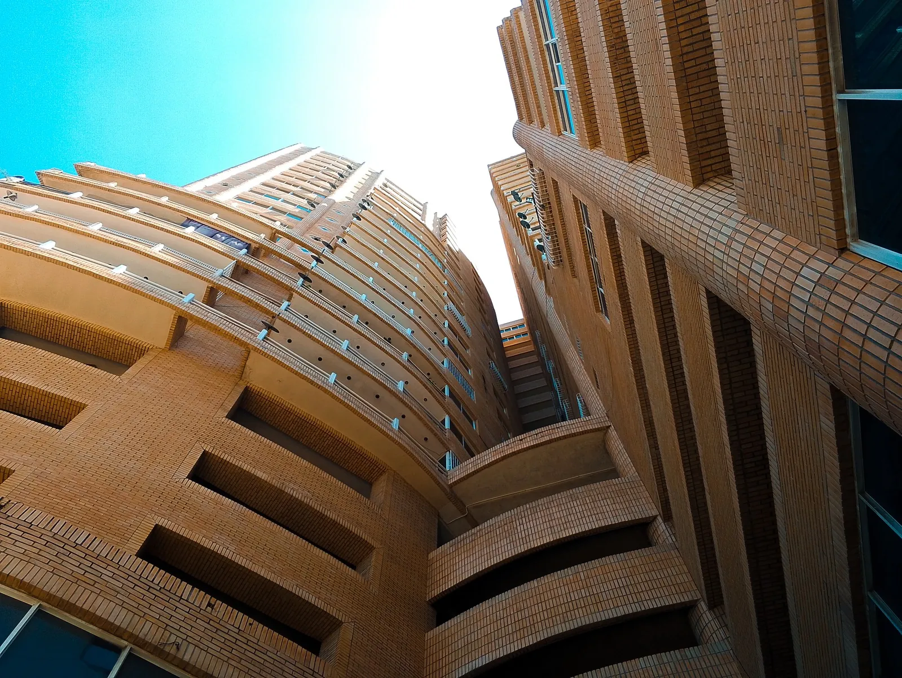
CAPTURANDO MOMENTOS
Manuel Nottaro
Fotografía y Video Profesional

Manuel Nottaro
Fotografía y Video Profesional
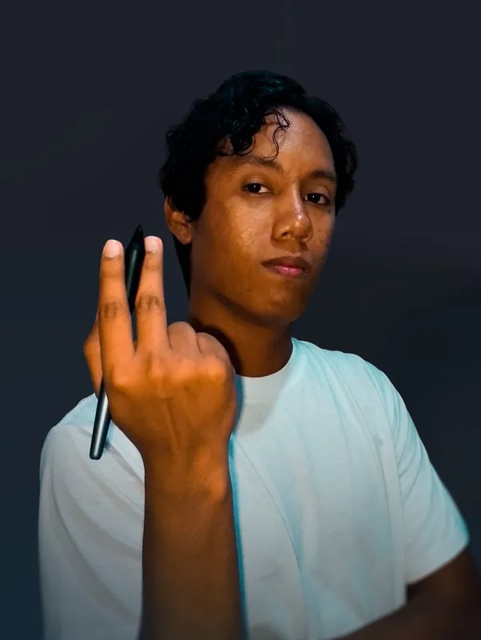
Comencé editando imágenes con textos hasta formar portadas para redes sociales, poco a poco hice lo mismo entre distintas imágenes. A día de hoy logro crear montajes fotográficos y corregir tanto el color como las imperfecciones que puedan encontrarse en fotos.
Especialidades:
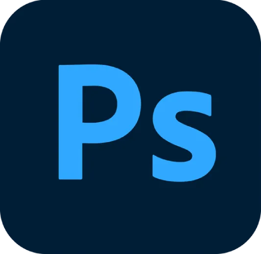
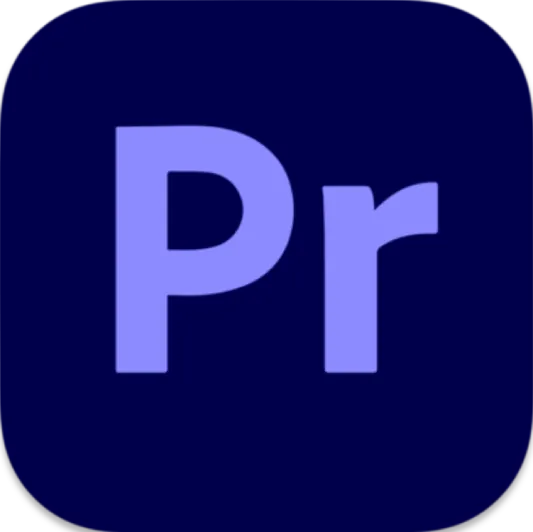
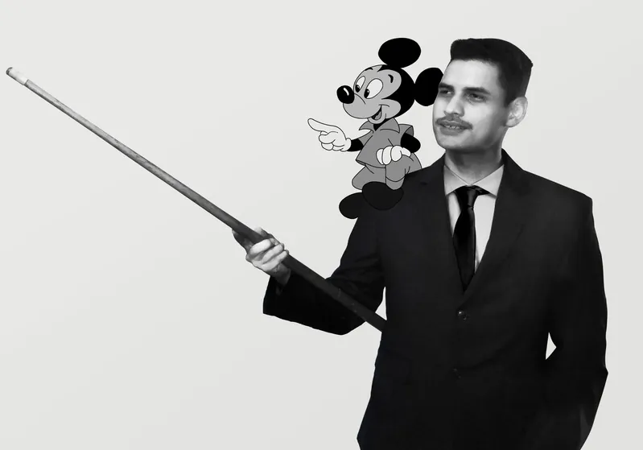
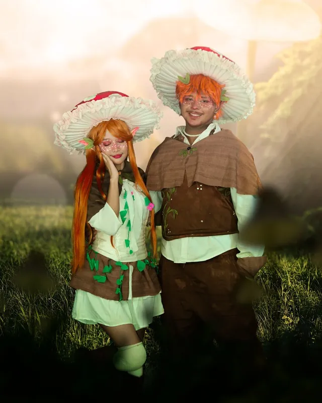
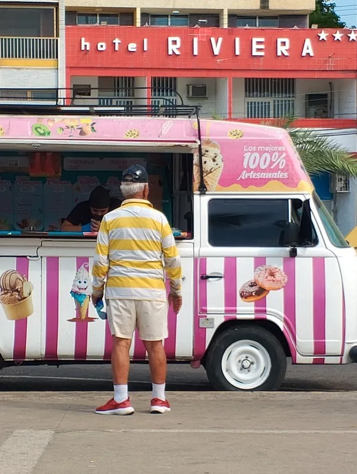
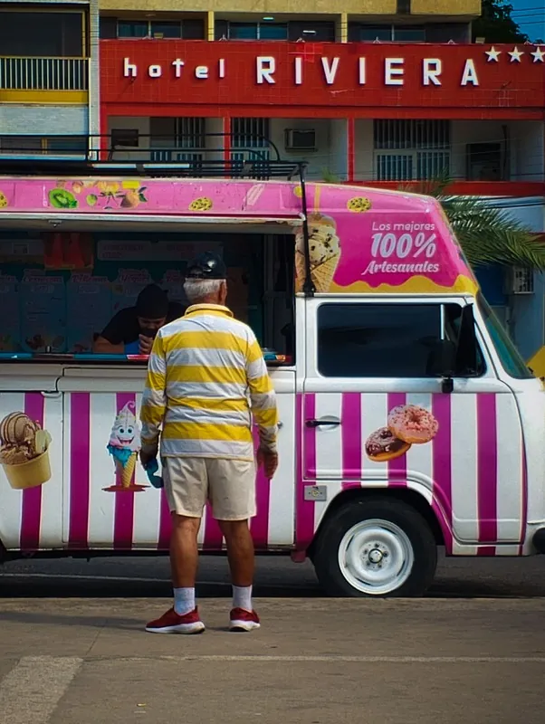
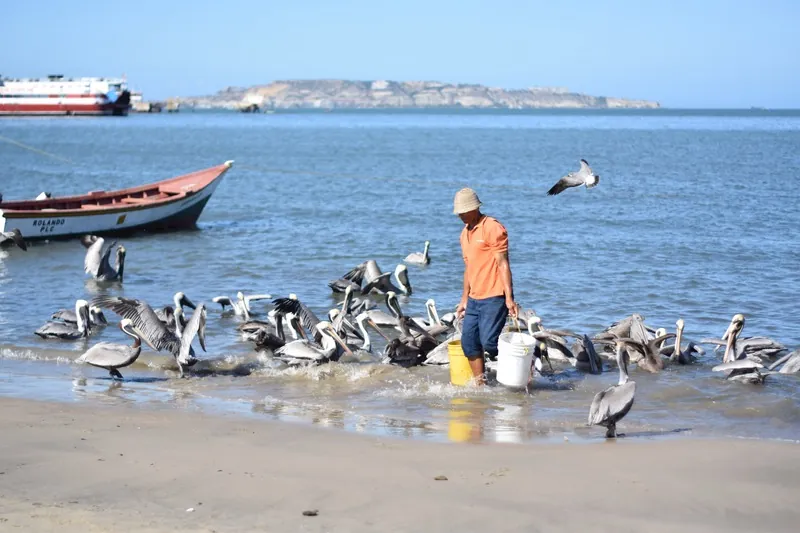
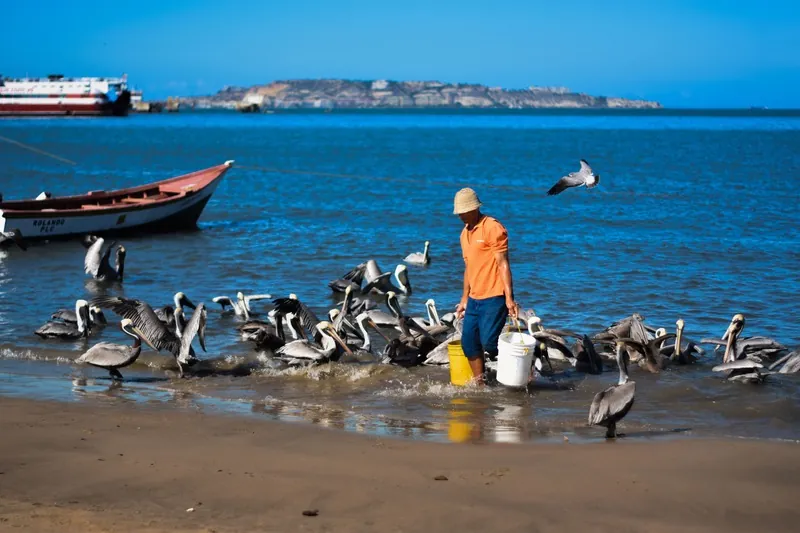
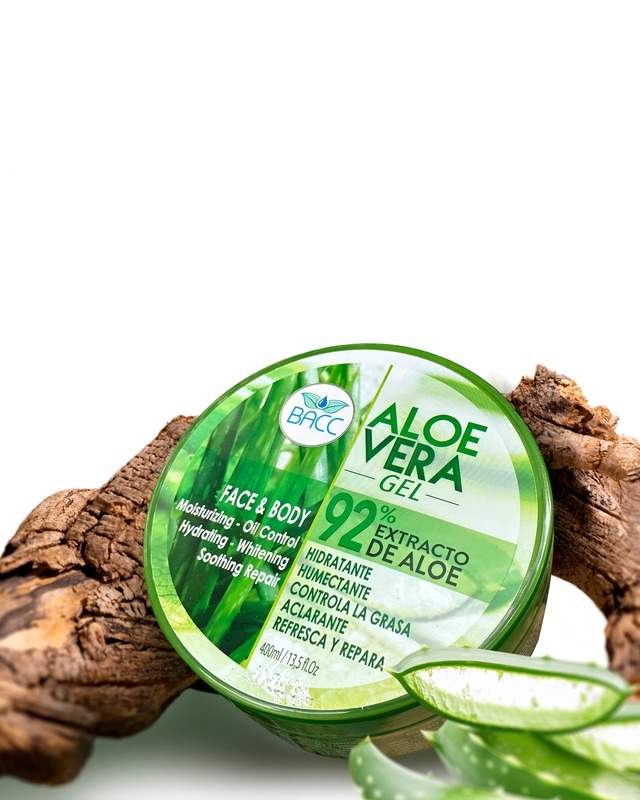
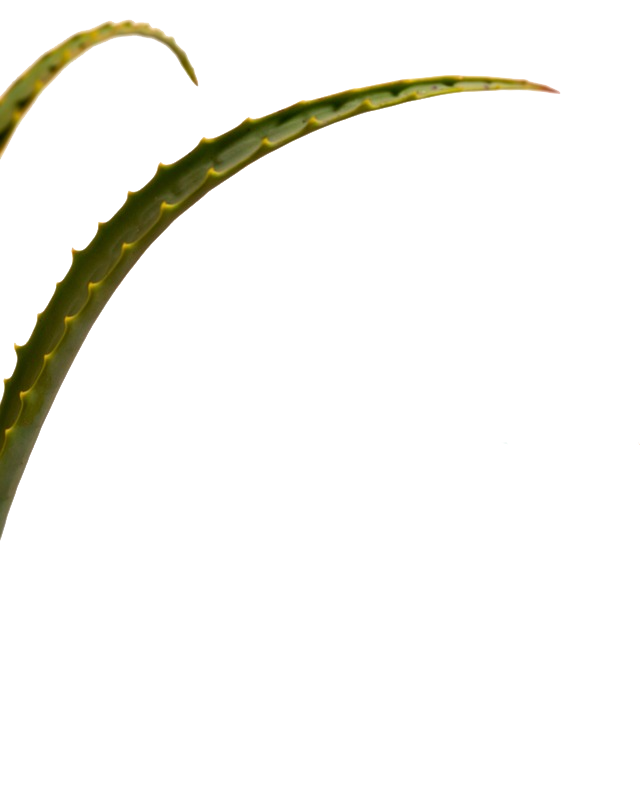
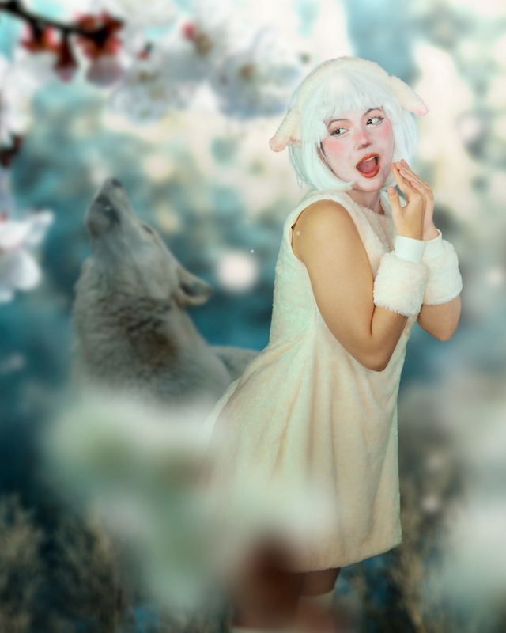
Lo divertido de las edición de fotos es que puedes experimentar bastante con la paleta de colores, y dejar que el espectador pueda entender el mensaje de la fotografía a través de sus colores.
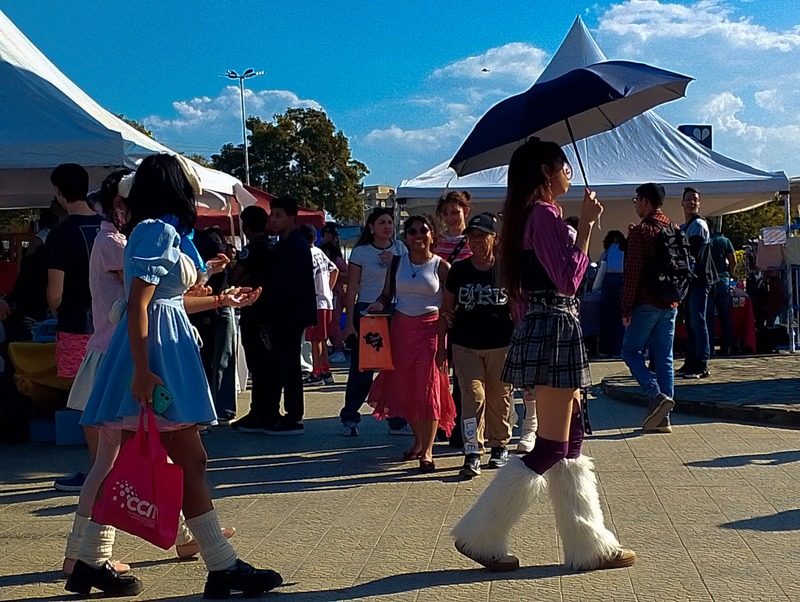
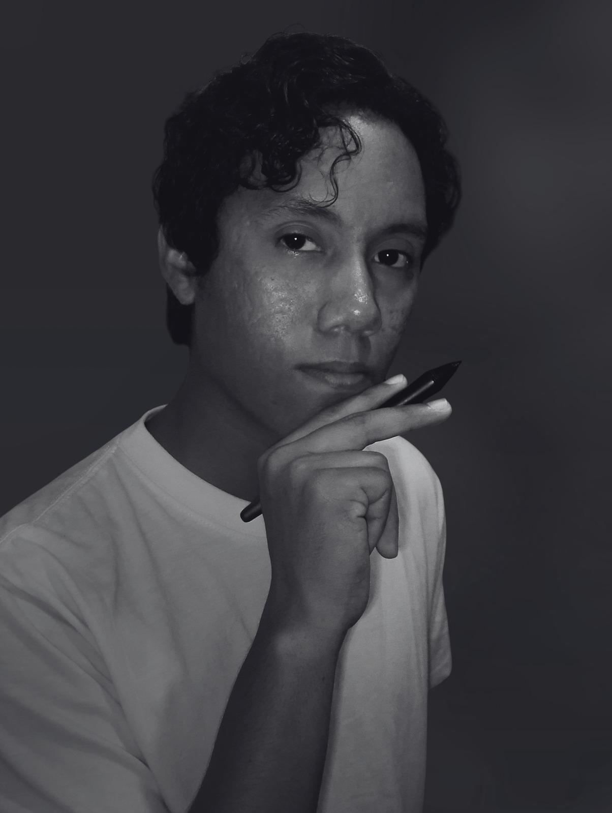